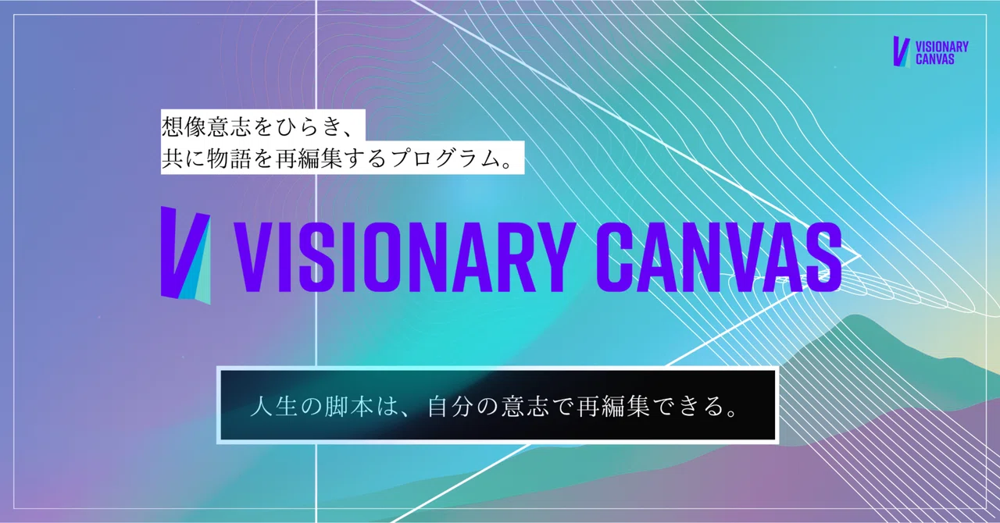
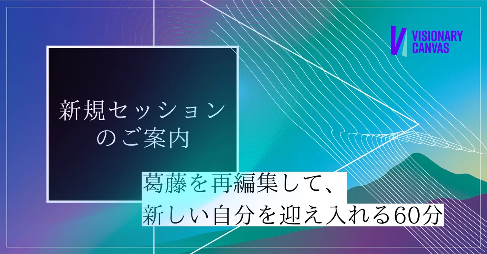
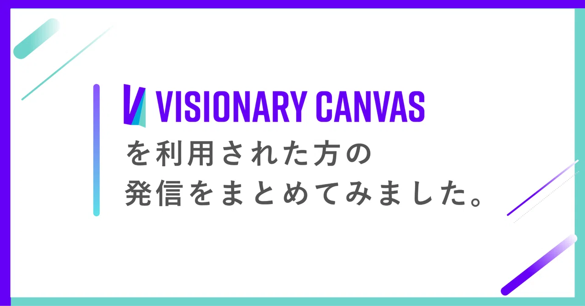

同じループを抜けた先に、
あなたが本当に向かいたい場所がある。
転職も、人間関係も、やりたいことも——なぜかまた同じループに戻ってくる。そのループの向こうに、あなたが本当に向かいたい場所がある。60分の対話で、その地図を一緒につくります。
ご紹介特典あり ── 詳しくは料金欄へ
実際のセッション成果物
生きたい世界
自分と周りが、よりよいビジョンに流れていく
乗り越えるテーマ
ビジョン通り進まない不安の構造が見えた。「流れに任せる」から「自分の感覚で引き寄せる」への転換が言葉になった。
頑張っているのに、なぜか前に進んでいる実感がない。そのループの向こうに、本当に向かいたい場所がある。
転職したい、でも
なぜか動けないまま
「いつか動こう」と思いながら、また気づけば同じ場所にいる。向かいたい場所は分かっているはずなのに。
人間関係が
またいつもの流れになる
環境を変えてもまた同じになる。本当はどうしたいか、の答えが自分の中にまだない感覚がある。
頑張っているのに
充実感がない
動いてはいる。でも「これが自分のしたいことか」という問いが消えない。向かう先が見えていない感じがする。
やりたいことはある、
でも一歩が出ない
「本当はこうしたい」がある。でも、それに向かって動いていいのかが分からないまま時間が過ぎる。
このループに、答えがある。
そのループの向こうに、あなたが本当に向かいたい場所がある。
あなたが話してくれた「最近モヤモヤしていること」を起点に、そのループの構造をリアルタイムで図解します。そしてループの反対側——あなたが本当に向かいたい場所を、一緒に言葉にします。
最近モヤモヤしていること、繰り返されている感覚——うまく言語化できなくて大丈夫。話しながら、その場で図が広がっていきます。
話した内容から、ループの構造を図解します。「なぜ同じ場所に来るのか」だけでなく、「本当はどこに向かいたいのか」が、会話の中で形になっていきます。
セッション後、図解した地図をPDFで送付します。ループの構造と、あなたが本当に向かいたい場所——その両方が一枚に収まった、あなただけの地図です。
認知の癖を意識化できるため、無駄に早く動くのではなく、正しいベクトルを確認できます。ベクトルのズレない状況へ進む指針が得られました。
180°あった迷いが、60°になった感覚。蛇行はしつつも、歩く方向は間違っていないと自信を持って言えるようになった。「コンパス」と「地図」を手に入れた気分です。
自分と会社の強みを構造化・言語化できたことは大きな収穫。チームのエンゲージメントを高める土台ができました。
自分1人での自己分析では辿り着けない領域に導いていただいた。仕事プライベート問わず迷った時に頼れる羅針盤を手に入れた感覚です。
自分のことなのに自分では辿り着けない、のループからぷはっと息を吹き返した感覚。受けた瞬間から日常が違って見える。とにかく面白かった、手品でした（笑）
ISHIKURA TATSUYA / VISIONARY CANVAS
島根県出身。大学卒業後、県庁職員として5年働いたのち、農業・NPO活動を経て独立。「成し遂げたい想いを引き出し言語化する問いかけ手法」を独自に開発。コーチング・人類学的フィールドワーク・編集工学・成人発達理論を統合したセッションを考案。延べ800時間以上のセッション実績を持ち、100パターン以上の思考データを研究し続けている。
「本当はどう生きたいか」——その答えは、話しながらでないと出てこないことが多い。まずは60分、あなたの話を起点に、一緒に地図をつくります。
思考の癖MAP図解セッション
税込 / 60分 / オンライン（Zoom）
ご予約後、日程調整のご連絡をいたします。
お申し込みから通常3〜5営業日以内に実施可能です。
Referral
ご紹介制度について
ご紹介いただいた方が思考の癖MAPセッションにお申し込みいただいた場合、お礼として通常20,000円のコーチングセッションを無償でご提供します。
※本制度は月に限りがございます。
セッションの考え方、ビジョナリーキャンバスの背景にある思想を発信しています。
気になった方はぜひ読んでみてください。

「自分」はどんな強みがあるのだろう。どんな才能を持ち合わせているのか。どんな世界を実現していきたいのだろう——探究に探究を重ねた結果、完成したものが、「ビジョナリーキャンバス」です。

「葛藤」や「残念な体験」の中にこそ、あなたの未来を変えるための最も重要な『情報』が隠されている——人生を大きく開いていく人たちの共通点とは。

ビジョナリーキャンバスを利用された方200名を超えました。実際に受けた方がどのような変化を体験したか、生の声を集めています。
Free Session · 60min · Online
「本当はこう生きたい」——その答えが言葉になった状態で、60分が終わります。
地図は手元に残るので、向かう先を忘れたときにいつでも戻れます。
オンライン（Zoom）・60分・成果物PDF送付あり